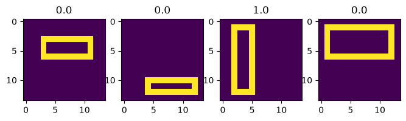

Convolutional Gaussian Processes¶
Mark van der Wilk (July 2019)
Here we show a simple example of the rectangles experiment, where we compare a normal squared exponential GP, and a convolutional GP. This is similar to the experiment in [1].
[1] Van der Wilk, Rasmussen, Hensman (2017). Convolutional Gaussian Processes. Advances in Neural Information Processing Systems 30.
Generate dataset¶
Generate a simple dataset of rectangles. We want to classify whether they are tall or wide. NOTE: Here we take care to make sure that the rectangles don’t touch the edge, which is different to the original paper. We do this to avoid needing to use patch weights, which are needed to correctly account for edge effects.
[1]:
import time
import matplotlib.pyplot as plt
import numpy as np
import tensorflow as tf
import tensorflow_probability as tfp
import gpflow
from gpflow import set_trainable
from gpflow.ci_utils import is_continuous_integration
gpflow.config.set_default_float(np.float64)
gpflow.config.set_default_jitter(1e-4)
gpflow.config.set_default_summary_fmt("notebook")
# for reproducibility of this notebook:
np.random.seed(123)
tf.random.set_seed(42)
MAXITER = 2 if is_continuous_integration() else 100
NUM_TRAIN_DATA = (
5 if is_continuous_integration() else 100
) # This is less than in the original rectangles dataset
NUM_TEST_DATA = 7 if is_continuous_integration() else 300
H = W = 14 # width and height. In the original paper this is 28
IMAGE_SHAPE = [H, W]
2026-10-15 09:26:01.994363: I external/local_xla/xla/tsl/cuda/cudart_stub.cc:32] Could not find cuda drivers on your machine, GPU will not be used.
2026-10-15 09:26:01.998573: I external/local_xla/xla/tsl/cuda/cudart_stub.cc:32] Could not find cuda drivers on your machine, GPU will not be used.
2026-10-15 09:26:02.010519: E external/local_xla/xla/stream_executor/cuda/cuda_fft.cc:477] Unable to register cuFFT factory: Attempting to register factory for plugin cuFFT when one has already been registered
WARNING: All log messages before absl::InitializeLog() is called are written to STDERR
E0000 00:00:1792056362.031167 101 cuda_dnn.cc:8310] Unable to register cuDNN factory: Attempting to register factory for plugin cuDNN when one has already been registered
E0000 00:00:1792056362.037402 101 cuda_blas.cc:1418] Unable to register cuBLAS factory: Attempting to register factory for plugin cuBLAS when one has already been registered
2026-10-15 09:26:02.059129: I tensorflow/core/platform/cpu_feature_guard.cc:210] This TensorFlow binary is optimized to use available CPU instructions in performance-critical operations.
To enable the following instructions: AVX2 AVX512F FMA, in other operations, rebuild TensorFlow with the appropriate compiler flags.
[2]:
def affine_scalar_bijector(shift=None, scale=None):
scale_bijector = (
tfp.bijectors.Scale(scale) if scale else tfp.bijectors.Identity()
)
shift_bijector = (
tfp.bijectors.Shift(shift) if shift else tfp.bijectors.Identity()
)
return shift_bijector(scale_bijector)
def make_rectangle(arr, x0, y0, x1, y1):
arr[y0:y1, x0] = 1
arr[y0:y1, x1] = 1
arr[y0, x0:x1] = 1
arr[y1, x0 : x1 + 1] = 1
def make_random_rectangle(arr):
x0 = np.random.randint(1, arr.shape[1] - 3)
y0 = np.random.randint(1, arr.shape[0] - 3)
x1 = np.random.randint(x0 + 2, arr.shape[1] - 1)
y1 = np.random.randint(y0 + 2, arr.shape[0] - 1)
make_rectangle(arr, x0, y0, x1, y1)
return x0, y0, x1, y1
def make_rectangles_dataset(num, w, h):
d, Y = np.zeros((num, h, w)), np.zeros((num, 1))
for i, img in enumerate(d):
for j in range(1000): # Finite number of tries
x0, y0, x1, y1 = make_random_rectangle(img)
rw, rh = y1 - y0, x1 - x0
if rw == rh:
img[:, :] = 0
continue
Y[i, 0] = rw > rh
break
return (
d.reshape(num, w * h).astype(gpflow.config.default_float()),
Y.astype(gpflow.config.default_float()),
)
[3]:
X, Y = data = make_rectangles_dataset(NUM_TRAIN_DATA, *IMAGE_SHAPE)
Xt, Yt = test_data = make_rectangles_dataset(NUM_TEST_DATA, *IMAGE_SHAPE)
[4]:
plt.figure(figsize=(8, 3))
for i in range(4):
plt.subplot(1, 4, i + 1)
plt.imshow(X[i, :].reshape(*IMAGE_SHAPE))
plt.title(Y[i, 0])

Squared Exponential kernel¶
[5]:
rbf_m = gpflow.models.SVGP(
gpflow.kernels.SquaredExponential(),
gpflow.likelihoods.Bernoulli(),
gpflow.inducing_variables.InducingPoints(X.copy()),
)
2026-10-15 09:26:07.337340: E external/local_xla/xla/stream_executor/cuda/cuda_driver.cc:152] failed call to cuInit: INTERNAL: CUDA error: Failed call to cuInit: UNKNOWN ERROR (303)
[6]:
rbf_training_loss_closure = rbf_m.training_loss_closure(data, compile=True)
rbf_elbo = lambda: -rbf_training_loss_closure().numpy()
print("RBF elbo before training: %.4e" % rbf_elbo())
RBF elbo before training: -9.9408e+01
[7]:
set_trainable(rbf_m.inducing_variable, False)
start_time = time.time()
res = gpflow.optimizers.Scipy().minimize(
rbf_training_loss_closure,
variables=rbf_m.trainable_variables,
method="l-bfgs-b",
options={"disp": True, "maxiter": MAXITER},
)
print(f"{res.nfev / (time.time() - start_time):.3f} iter/s")
42.767 iter/s
[8]:
train_acc = np.mean((rbf_m.predict_y(X)[0] > 0.5).numpy().astype("float") == Y)
test_acc = np.mean((rbf_m.predict_y(Xt)[0] > 0.5).numpy().astype("float") == Yt)
print(f"Train acc: {train_acc * 100}%\nTest acc : {test_acc*100}%")
print("RBF elbo after training: %.4e" % rbf_elbo())
Train acc: 100.0%
Test acc : 68.33333333333333%
RBF elbo after training: -6.0371e+01
Convolutional kernel¶
[9]:
f64 = lambda x: np.array(x, dtype=np.float64)
positive_with_min = lambda: affine_scalar_bijector(shift=f64(1e-4))(
tfp.bijectors.Softplus()
)
constrained = lambda: affine_scalar_bijector(shift=f64(1e-4), scale=f64(100.0))(
tfp.bijectors.Sigmoid()
)
max_abs_1 = lambda: affine_scalar_bijector(shift=f64(-2.0), scale=f64(4.0))(
tfp.bijectors.Sigmoid()
)
patch_shape = [3, 3]
conv_k = gpflow.kernels.Convolutional(
gpflow.kernels.SquaredExponential(), IMAGE_SHAPE, patch_shape
)
conv_k.base_kernel.lengthscales = gpflow.Parameter(
1.0, transform=positive_with_min()
)
# Weight scale and variance are non-identifiable. We also need to prevent variance from shooting off crazily.
conv_k.base_kernel.variance = gpflow.Parameter(1.0, transform=constrained())
conv_k.weights = gpflow.Parameter(conv_k.weights.numpy(), transform=max_abs_1())
conv_f = gpflow.inducing_variables.InducingPatches(
np.unique(conv_k.get_patches(X).numpy().reshape(-1, 9), axis=0)
)
[10]:
conv_m = gpflow.models.SVGP(conv_k, gpflow.likelihoods.Bernoulli(), conv_f)
[11]:
set_trainable(conv_m.inducing_variable, False)
set_trainable(conv_m.kernel.base_kernel.variance, False)
set_trainable(conv_m.kernel.weights, False)
[12]:
conv_training_loss_closure = conv_m.training_loss_closure(data, compile=True)
conv_elbo = lambda: -conv_training_loss_closure().numpy()
print("conv elbo before training: %.4e" % conv_elbo())
conv elbo before training: -8.7271e+01
[13]:
start_time = time.time()
res = gpflow.optimizers.Scipy().minimize(
conv_training_loss_closure,
variables=conv_m.trainable_variables,
method="l-bfgs-b",
options={"disp": True, "maxiter": MAXITER / 10},
)
print(f"{res.nfev / (time.time() - start_time):.3f} iter/s")
7.484 iter/s
[14]:
set_trainable(conv_m.kernel.base_kernel.variance, True)
res = gpflow.optimizers.Scipy().minimize(
conv_training_loss_closure,
variables=conv_m.trainable_variables,
method="l-bfgs-b",
options={"disp": True, "maxiter": MAXITER},
)
train_acc = np.mean((conv_m.predict_y(X)[0] > 0.5).numpy().astype("float") == Y)
test_acc = np.mean(
(conv_m.predict_y(Xt)[0] > 0.5).numpy().astype("float") == Yt
)
print(f"Train acc: {train_acc * 100}%\nTest acc : {test_acc*100}%")
print("conv elbo after training: %.4e" % conv_elbo())
Train acc: 100.0%
Test acc : 99.0%
conv elbo after training: -2.6753e+01
[15]:
res = gpflow.optimizers.Scipy().minimize(
conv_training_loss_closure,
variables=conv_m.trainable_variables,
method="l-bfgs-b",
options={"disp": True, "maxiter": MAXITER},
)
train_acc = np.mean((conv_m.predict_y(X)[0] > 0.5).numpy().astype("float") == Y)
test_acc = np.mean(
(conv_m.predict_y(Xt)[0] > 0.5).numpy().astype("float") == Yt
)
print(f"Train acc: {train_acc * 100}%\nTest acc : {test_acc*100}%")
print("conv elbo after training: %.4e" % conv_elbo())
Train acc: 100.0%
Test acc : 99.0%
conv elbo after training: -2.6734e+01
[16]:
set_trainable(conv_m.kernel.weights, True)
res = gpflow.optimizers.Scipy().minimize(
conv_training_loss_closure,
variables=conv_m.trainable_variables,
method="l-bfgs-b",
options={"disp": True, "maxiter": MAXITER},
)
train_acc = np.mean((conv_m.predict_y(X)[0] > 0.5).numpy().astype("float") == Y)
test_acc = np.mean(
(conv_m.predict_y(Xt)[0] > 0.5).numpy().astype("float") == Yt
)
print(f"Train acc: {train_acc * 100}%\nTest acc : {test_acc*100}%")
print("conv elbo after training: %.4e" % conv_elbo())
Train acc: 100.0%
Test acc : 98.66666666666667%
conv elbo after training: -1.7047e+01
[17]:
gpflow.utilities.print_summary(rbf_m)
| name | class | transform | prior | trainable | shape | dtype | value |
|---|---|---|---|---|---|---|---|
| SVGP.kernel.variance | Parameter | Softplus | True | () | float64 | 3.56655 | |
| SVGP.kernel.lengthscales | Parameter | Softplus | True | () | float64 | 2.75129 | |
| SVGP.inducing_variable.Z | Parameter | Identity | False | (100, 196) | float64 | [[0., 0., 0.... | |
| SVGP.q_mu | Parameter | Identity | True | (100, 1) | float64 | [[-5.78241751e-01... | |
| SVGP.q_sqrt | Parameter | FillTriangular | True | (1, 100, 100) | float64 | [[[6.44747990e-01, 0.00000000e+00, 0.00000000e+00... |
[18]:
gpflow.utilities.print_summary(conv_m)
| name | class | transform | prior | trainable | shape | dtype | value |
|---|---|---|---|---|---|---|---|
| SVGP.kernel.base_kernel.variance | Parameter | Sigmoid + Chain | True | () | float64 | 99.99595 | |
| SVGP.kernel.base_kernel.lengthscales | Parameter | Softplus + Chain | True | () | float64 | 0.6471227645854579 | |
| SVGP.kernel.weights | Parameter | Sigmoid + Chain | True | (144,) | float64 | [0.42872092, 0.55459298, 0.68450341... | |
| SVGP.inducing_variable.Z | Parameter | Identity | False | (45, 9) | float64 | [[0., 0., 0.... | |
| SVGP.q_mu | Parameter | Identity | True | (45, 1) | float64 | [[0.01468073... | |
| SVGP.q_sqrt | Parameter | FillTriangular | True | (1, 45, 45) | float64 | [[[0.06753868, 0., 0.... |
Conclusion¶
The convolutional kernel performs much better in this simple task. It demonstrates non-local generalization of the strong assumptions in the kernel.